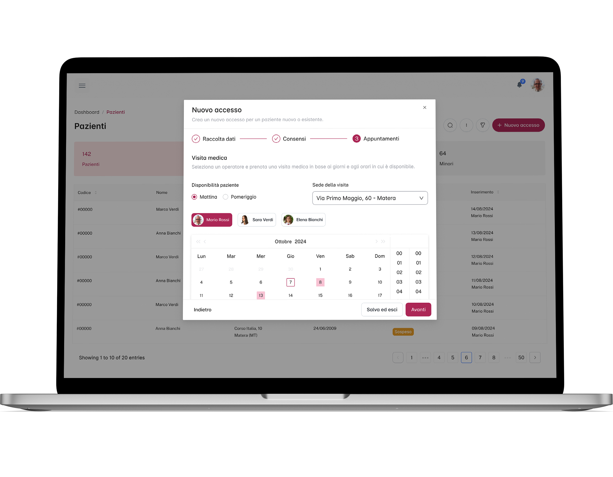
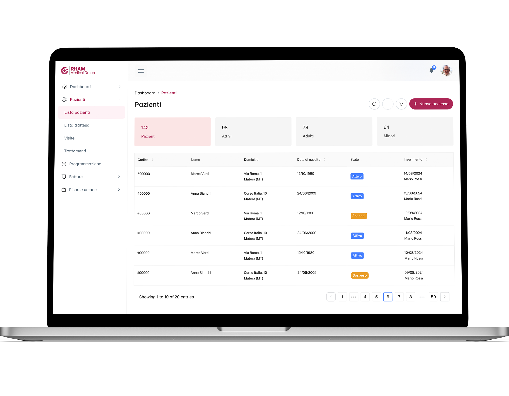
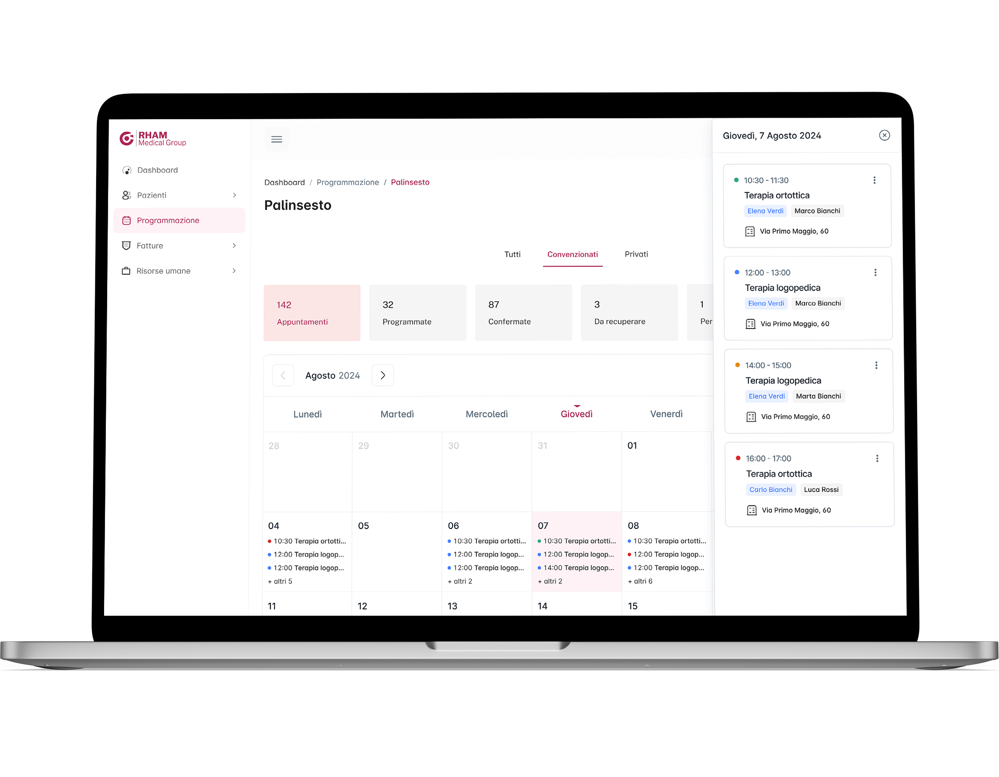
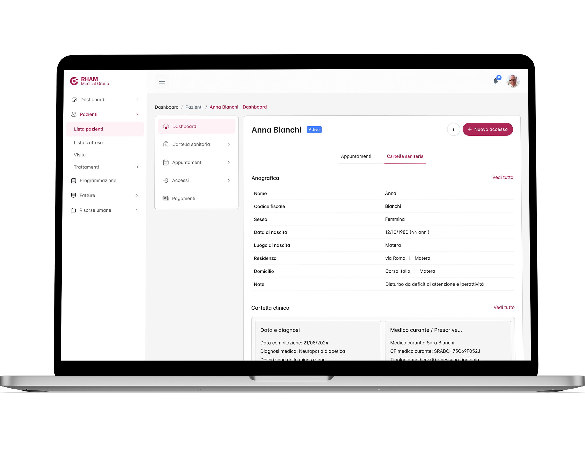

Realization period
Aug 2024 - Jan 2025
Clients
Rham Medical Group, Cybercore
Design toolkit
Figma, Adobe Illustrator, Whimsical, User interview
Aug 2024 - Jan 2025
Rham Medical Group, Cybercore
Figma, Adobe Illustrator, Whimsical, User interview
Rham+D is a multicast client/server web platform usable by most common web browsers, built for Rham Medical Group. It is designed for the management of healthcare and non-healthcare personnel, patients, billing, scheduling of treatments and appointments, and many other services offered by this National Health System-affiliated healthcare institution that has several locations in Puglia and Basilicata.
Rham over the years has relied on various software to be able to manage its business processes, most recently Qure OS, but has never been satisfied because it has always had to deal with complex, unintuitive and confusing programs that instead of facilitating the work of its employees complicated and slowed it down. With the expansion of the company and the number of clients, Rham posed a question that I tried to answer with my work “can a new program help us optimize the work of our employees and the service to be offered to our private and contracted patients?”
For this freelance UX/UI designer job, I collaborated with an analyst, developers, and clients. I was partly responsible for the study phase of business processes and Qure to understand the points for improvement. In addition, I performed interviews with clients and users, created the whole UI part and integrated the design system Able Pro.
1x Project Manager
1x Software Analyst
1x UX/UI Designer
1x Back-end Developer
1x Front-end Developer
The new software to be provided to Rham Medical Group had to take into account the services already provided by the old software they owned, plus new features to streamline the work of employees and help patients with registration.
make the patient registration and admission process more intuitive and faster
enable graphometric signatures and health card reading to digitize and improve some work processes
provide for smoother navigation and optimized division of services for various user groups
give the ability to create and manage with fewer steps appointments and treatments
For this project, the client initially showed us the KPIs to be achieved and asked us to use as a starting point the software they have been using over the years, namely Qure OS. I agreed with this choice of theirs mainly because the software is used by different types of users (secretaries, health care workers, administrative employees, etc.) and since there was not much time to re-train all these people, the decision was made to create a program similar in appearance to the previous one but enriched with new features and optimized in organization and navigation. In this way we tried to cut down the learning time and speed up the work of the employees.
Therefore, in the early stages I studied Qure software in depth to understand its architecture and spoke directly with different user groups to try to step into their shoes to better understand the strengths and weaknesses of the program, their difficulties and preferences.
Considering the final product was intended for a limited number of users, I was fortunate to be able to interview a large number of employees, not only health care workers but also other professional figures directly involved (human resources managers, desk clerks, etc.), who provided me with a great deal of data and feedback.
The administrative manager played a key role because he served as a connection point in dialogue with all the other professional figures I interacted with, namely: health director, psychologists, human resources manager, accountants, secretaries, and administrators.
After mapping the business processes with the Porter model and collecting data from the interviews, I validated (and in some cases modified) with the client the choices agreed upon initially and planned the next steps, including the creation of: user persona, scenarios, user flow, user journey and task flow.
During patient registration and admission, users have to note down a large number of personal and non-personal data, collect authorization signatures and ID scans, book appointments, and notify patients. Currently, all this is done partly by software, partly by analog methods and partly by voice, with the danger of misplacing data, creating confusion and causing delays.
Result: providing desk clerks with 3 services in one that allows them to record patient data (including through the use of a health card reading system), collect and digitize privacy consents with the help of graphometric signatures, and immediately book an appointment with accompanying patient alert via webhook.
When studying the old software, it turned out that the process of booking therapy sessions, confirming them and consulting the overall program involves many figures (with different tasks) and is very long and cumbersome.
Result: a system to immediately check the availability of health professionals, send requests for appointments (with attached notification, thus abolishing the use of phone calls and oral notices) and confirm sessions in a few clicks. All accompanied by a general program that automatically updates when sessions are confirmed, which can save hours and hours of work.
Qure uses a somewhat dated visual language, a somewhat confusing use of hierarchies, and a color code that is not always effective. Not to mention the large crowding of elements in the tables and modals, which are key components for this software.
Result: the use of a neat, modern, versatile and very understandable design system for such a program (Able Pro), which allows for more powerful but at the same time more understandable tables and modals as well as nested but easily navigable menus. All customized to the type of worker who uses the software to come to grips with their needs.
A critically important part of this project was to manage the patient intake service, given its complexity and relevance. With the management of contracted and private patients, various statuses, data and permissions, there are inevitably many intricate entanglements, so I carefully analyzed everything (and also with the help of artificial intelligence) to make the whole process easier for the end user.
With careful study of the old program, all the flows that needed to be improved and integrated, and all the feedback collected during the interviews, I was able to begin to bring to life the solutions and processes designed for the new software. The software analyst and I focused a lot on the initial phase of patient acceptance, the most complex and delicate phase on which all subsequent phases depend.
The first sketches were immediately followed by lo-fi prototypes (having already identified the design system to be used, i.e., MUI's Joy UI) because of tight timelines. This certainly helped in communicating with the client and end users during the design phase and gathering consideration for improving interaction flows.
To test the proper functioning and progress of the flows, I submitted lo-fi prototypes to end users on a weekly basis and was able to gather valuable feedback instantly. When the work was almost complete, I gave a presentation of the new software in front of all Rham employees at a special meeting, at the end of which I gathered very useful tips that I integrated into the final prototypes.
Talking with the customer and desk attendants, the difficulty in recording customer data and privacy permits came out. This is because manual data entry can be time-consuming and not without error, as well as the collection of consents still carried out in paper mode.
In order to improve user experience and worker efficiency, it was thought to integrate the scanning of the health card into the patient acceptance phase, thus being able to quickly collect personal data, while with the graphometric signature it is possible to collect consents by avoiding the scanning of paper sheets and their uploading to the software
When studying the old software, I, like the employees, had difficulty navigating because of an unintuitive menu and the constant opening of windows for different features. The decision to use a dual menu (one main and one secondary) and to contain some creation processes in modals, instead of opening new windows, greatly improved navigability.
Later, the adoption of a new design system further improved menu navigability, especially in cases of nested functions, this thanks to menu items that can be compressed and collapsed as needed
Midway through the project, the programmers expressed the need to change the design system due to technical issues, thus switching from Joy UI to Able Pro. This fortunately did not result in any delays but only a partial re-factory of the already designed use cases.
The new software uses Rham's brand color and, of course, the components provided by Able Pro, but where needed custom components have been created, such as modals with wizards, accordions, and appointments inside, which are essential for many creation and archiving processes.

Among the major players in this new software are definitely tables, especially those involving lists of visits, patients, and treatments, which are key allies for end users and which, thanks to Able Pro, have been made more powerful and readable given the large amount of data they contain.

The scheduling phase plays a key role in managing appointments and treatments, so calendars have been made more versatile and functional. In fact, they can be displayed by day, week or month, contain appointment cards that can be moved by drag-and-drop when needed, and contain very comprehensive filters to speed up the search for content.
The cards use a color code, inherited from the tags in the visit and patient tables, which serves to immediately identify the status of the visit, and in addition the pages containing the calendars are divided by private and contracted patients (a division also present in other parts of the software).

Knowledge of patients but also of one's own data and work commitments is essential to be able to do a good job, so both staff and patients have a dashboard divided into 2 parts to consult all the details but in a different way. On the one dedicated to the patient (obviously not consultable by patients but only by staff) you can see his health record, his biographical data and a small calendar (linked to the main one) with his upcoming visits.
The health staff has a very similar dashboard, however, in addition they have a schedule linked to courses and company medical visits. Other services related to billing, access, appointments, etc. are available for the 2 types of users.

At the time of writing this case study, the project is in the midst of development by the programmers, so I cannot provide definitive data regarding success metrics at this time. Updates will follow. What I can share now is data from the latest qualitative test conducted with various Rham employees to verify that the latest changes were set up correctly.
The customer always showed his satisfaction during the design phase, but it was surprising to see the enthusiasm of the entire staff during the collective presentation of the prototype. Enthusiasm and curiosity were flanked by some understandable concerns mostly related to having to learn new features, but that was forgotten when the benefits and ease of use were shown.
Rham is expanding and incorporating other companies that will use the new software, but in the future it is not ruled out that it may evolve into a multi-company program that will maintain data-centricity (multi-tenant architecture). Possible future developments include the possibility of creating a mobile app (for smartphones and tablets) to be used for communications with patients and therapists, both informational and operational.